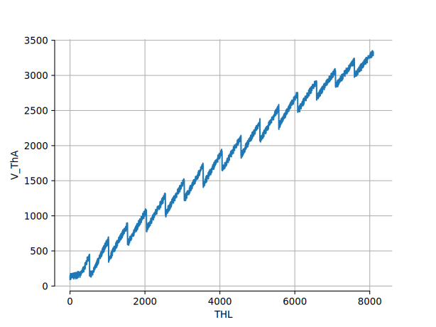
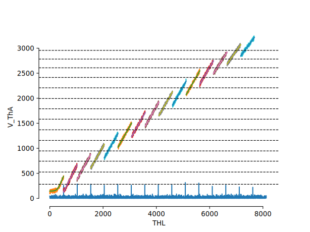
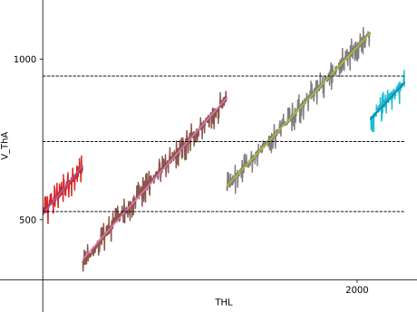
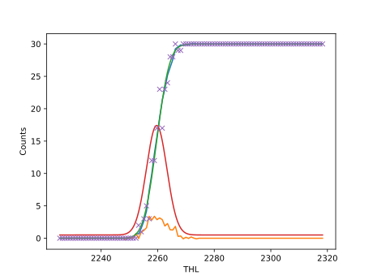
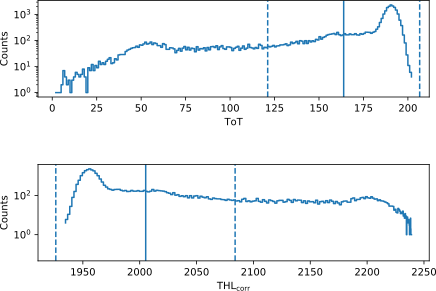
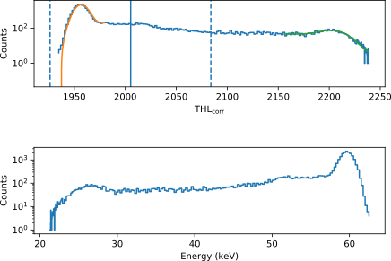
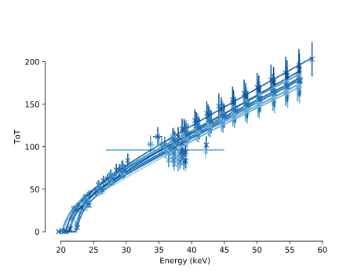
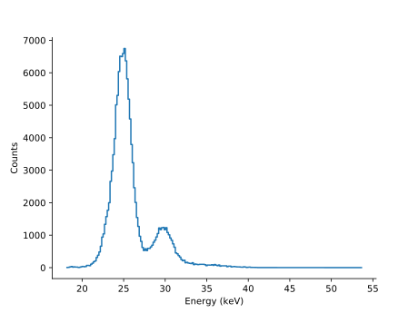
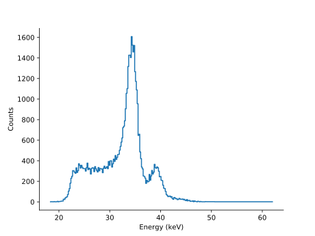

class: center, middle, inverse # The Black Art of Energy Calibration ### 10th July 2018 --- ## THL Calibration - Want to do THL-scan later `\(\rightarrow\)` Need to calibrate threshold voltage V_ThA first - Changing THL linearly results in a sawtooth curve for V_ThA <p style="text-align:center;"></p> --- ## THL Calibration #2 - Calculate derivative of curve to find edges in sawtooth - Divide curve into segments at THL-edge points - Fit curve to each segment (erf-fit for first segment, linear-fit for remaining ones) <p style="text-align:center;"></p> --- ## THL Calibration #3 - Zoomed in view of previous calibration plot - Linear fit described via `\(m \cdot \mathrm{THL} + t\)` - Find value of V_ThA at THL `\(T\)` which has the same distance on the THL-axis to both neighbouring linear fits, i.e. `\(T - T_1 = T_2 - T\)`, where `\(T_1\)` and `\(T_2\)` are the intersection points - Solution: `\(\frac{1}{m_1 + m_2}\left(2T\cdot m_1m_2 + t_1m_2 + t_2m_1\right)\)` (indicated by dashed lines) <p style="text-align:center;"></p> --- ## THL Calibration #4 - Cut segments for which two V_ThA voltages exist, i.e. don't use corresponding THL values - Resulting V_ThA curve is a concatenation of the fits in the cut THL value ranges - Since the slope varies from fit to fit, the resulting change when varying V_ThA linearly is not linear - Solution: Vary THL but use V_ThA as corrected THL value in the following --- ## THL to ToT Conversion - Generate `\(N = 30\)` test pulses with arbitrary energies (due to unknown capacitance) - Store the mean value and standard deviation of the ToT pulses - Perform a THL scan to get the cumulative sum of the pulse - Perform erf-fit to get position as well as standard deviation of the pulse in the THL domain <p style="text-align:center;"></p> --- ## THL to ToT - Calibration - Perform conversion from THL to ToT for each pixel using multiple test pulse energies - Strange, unresolved glitches for certain THL values (due to periphery DACs maybe?) - Perform fit for each dataset to get calibration parameters for each pixel <p style="text-align:center;"><img src="images/pixelCalib.svg" alt="pixelCalib" width="600px" align="middle"/></p> --- ## THL to ToT - Fit function - Household fit function for THL to ToT conversion: $$\mathrm{ToT}(\mathrm{THL}) = a\cdot \mathrm{THL} + b + \frac{c}{\mathrm{THL} - t} $$ - But, found out that the following function fits better (better convergence, relative error on fit parameters is smaller): $$\mathrm{ToT}_\mathrm{atan}(\mathrm{THL}) = a(\mathrm{THL} - b) + c\cdot\tan^{-1}\left(\frac{\mathrm{THL} - b}{t}\right)$$ Problem: only numerically invertable - Approximation (Taylor-series) of `\(\mathrm{ToT}_\mathrm{atan}(\mathrm{THL})\)` leads to: $$\mathrm{ToT}_\mathrm{simple}(\mathrm{THL}) = a(\mathrm{THL} - b) - c\cdot\left(\frac{\pi}{2} + \frac{t}{\mathrm{THL - b}}\right)$$ which is similar to the household function, but contains a correlation of `\(b\)` and `\(t\)` which might stabilize the fit. Therefore, using `\(\mathrm{ToT}_\mathrm{simple}(\mathrm{THL})\)` in the following --- ## ToT to THL Conversion - Invert `\(\mathrm{ToT}_\mathrm{simple}(\mathrm{THL})\)` to get $$\mathrm{THL}_\mathrm{simple}(\mathrm{ToT}) = b + \frac{1}{4a}\cdot\left(2\mathrm{ToT} + c\cdot\pi + \sqrt{16act + (2\cdot\mathrm{ToT} + c\cdot\pi)^2}\right)$$ - Perform conversion on Am-241 data: <p style="text-align:center;"></p> --- ## THL to Energy - Perform fits to peaks at 59.5409 keV and 26.3446 keV (in THL spectrum); Use (erf + normal)-function to model signal and background - Assumption: THL proportional to energy `\(\rightarrow\)` Linear conversion <p style="text-align:center;"></p> --- ## Energy to ToT Conversion Insert estimated conversion parameters in pixel calibration curves <p style="text-align:center;"></p> --- ## Conversion Example: Am-241 <p style="text-align:center;"><img src="images/AmCalib.svg" alt="AmCalib" width="700px" align="middle"/></p> --- ## Conversion Example: Sn Fluorescence <p style="text-align:center;"></p> --- ## Conversion Example: Ba Fluorescence <p style="text-align:center;"></p>